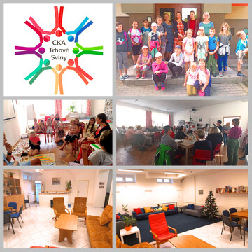

Sociální služby

Podpora sociálních služeb závisí na sociální politice státu. V posledních letech se však tato zodpovědnost přesunula na kraje a stále více i na města a obce. Již nyní s poskytovateli sociálních služeb spolupracujeme a významně je finančně podporujeme.
Důležitou roli hraje velmi dobrá spolupráce s naším sociálním odborem. Díky komunitnímu plánování sociálních služeb jsme v intenzivním kontaktu s poskytovateli sociálních služeb, lépe se nám monitorují potřeby v našem městě i regionu. Důležitá je i konkurence mezi poskytovali služeb a rozšíření nabídky těchto služeb.
Město poskytuje i prostory pro poskytování služeb – např. pro bezplatnou právní poradnu, nízkoprahové zařízení pro děti a mládež Archa. Podporujeme především terénní služby, tedy služby, které jsou poskytovány v domácím prostředí. Zásadní je spolupráce s Domečkem, který poskytuje řadu sociálních služeb a služeb návazných, ale spravuje i Buškův hamr, kulturní památku v majetku města.
Podařilo se
-
zrekonstruovat prostory na poliklinice, které nyní využívá nízkoprahové zařízení Archa.
-
upravit a vybavit prostory na poliklinice pro Centrum komunitních aktivit, získat dotaci na jeho provozování.
-
podporovat poskytovatele tzv. návazných služeb – např. rodinné centrum Trhováček.
-
prostřednictvím Místní akční skupiny Sdružení Růže finančně podpořit příměstské tábory pro děti.
-
spojit síly poskytovatelů sociálních služeb a dalších organizací a usnadnit začlenění ukrajinských uprchlíků.
Chceme
-
nadále podporovat především terénní sociální služby – Ledax, Archa, Borůvka, Domeček, Fokus, Raná péče, Česká maltézská pomoc atd.
-
zajistit těmto službám zázemí ve městě.
-
více informovat občany o možnostech tyto služby využívat.
-
zprostředkovávat komunikaci mezi jednotlivými poskytovateli sociálních služeb.
-
podílet se na vytváření sítě sociálních služeb v Jihočeském kraji.